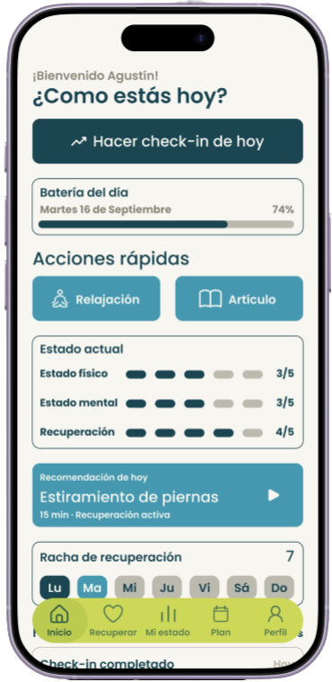
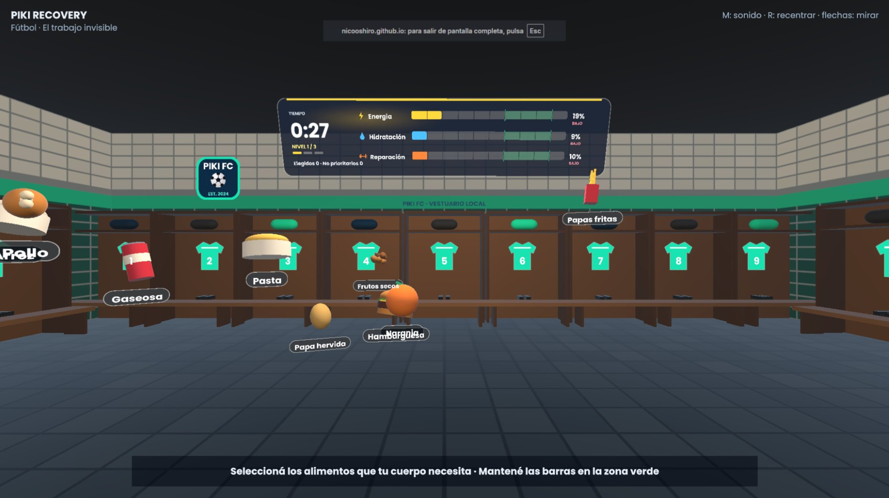
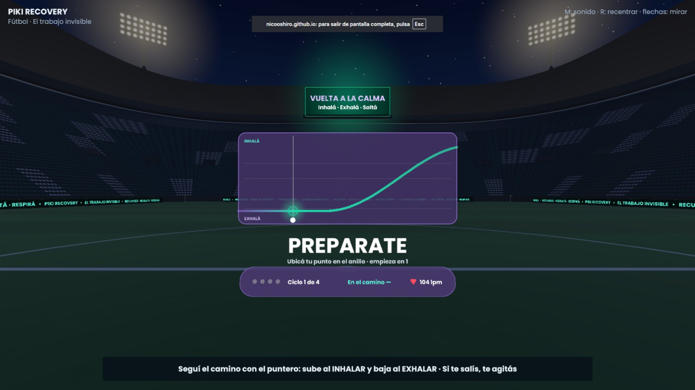
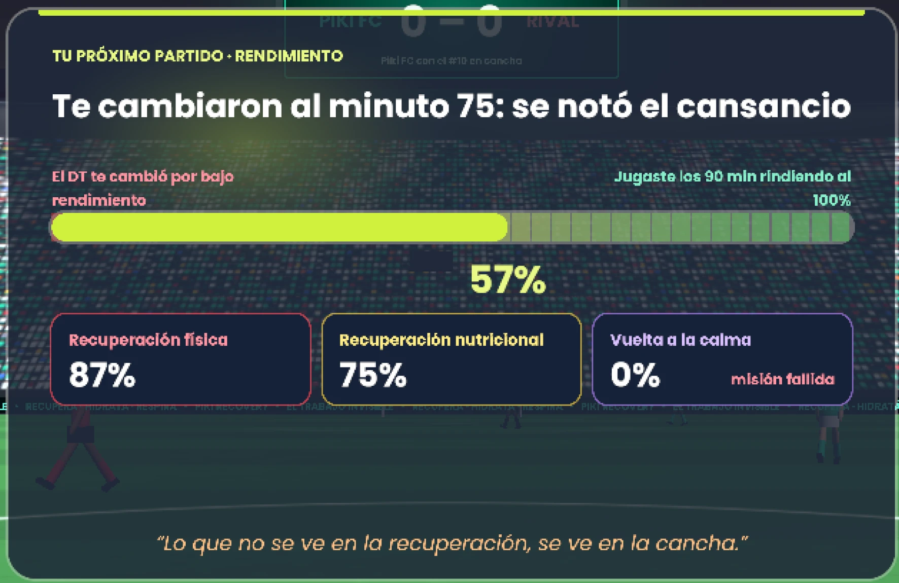

Recuperá
Recuperación física y mental para deportistas juveniles en formación. El rendimiento también se construye fuera de la cancha.
Piki
Un proyecto, tres maneras de recuperarte
Reunimos en un solo lugar el evento, la aplicación y el videojuego para que la recuperación deje de ser invisible y pase a formar parte de tu rutina.
Piki: el trabajo invisible
Una jornada para vivir la recuperación en primera persona, con profesionales y actividades.
Ver el evento →App Piki
Check-in diario, mapa corporal y rutinas para sostener hábitos todos los días.
Ver la app →Videojuego inmersivo
Viví el post partido de un atleta: recuperación física, nutrición y vuelta a la calma.
Ver el juego →Contenidos
Artículos sobre descanso, entrenamiento, hábitos y recuperación física y mental.
Ver novedades →
Quiénes somos
Hacemos visible el trabajo invisible
Piki surge de una investigación sobre la recuperación física y mental en deportistas juveniles en formación. Analizamos el deporte desde una mirada integral para entender cómo los jóvenes transitan la recuperación dentro de su rutina.
Descubrimos que muchas veces queda librada a la memoria o a la intuición. Por eso creamos herramientas que la vuelven cotidiana, simple y accesible, sin reemplazar el acompañamiento de profesionales.
Nuestra hipótesis“La falta de un equipo multidisciplinario en los deportistas juveniles genera un déficit en su recuperación física y mental, promoviendo la normalización de la fatiga, el desconocimiento del sobreentrenamiento y una mayor vulnerabilidad a lesiones.”
Nuestros pilares
Todo lo que pasa fuera del entrenamiento y forma parte del rendimiento. Tocá cada pilar.
Equipo
Quiénes lo hacemos
Paulina Diaz
Diseño y desarrolloFrancisco Fafián
Diseño y desarrolloNicolás Oshiro
Diseño y desarrollo
El evento
Viví la recuperación
Una jornada para conocer Piki, probar el videojuego y aprender prácticas de recuperación junto a profesionales de la salud y el deporte.
Piki Day
Acceso a todos los sectores, charlas y estaciones de juego durante toda la jornada.
$15.000ARS
- Fecha27 de febrero de 2027
- Horario10 a 17 h
- LugarLa Rural, Pabellón Ocre · Av. Santa Fe 4201
0días
0horas
0min
0seg
Total$15.000
Agenda
- 10:00
Apertura
Acreditación y recorrido por los sectores.
- 11:00
Actividades guiadas
Movilidad, elongación y respiración en grupos reducidos.
- 13:00
Charlas con profesionales
Kinesiología, nutrición y psicología deportiva.
- 15:00
Experiencia Piki
Estaciones de juego y demo de la app.
- 16:30
Cierre
Novedades del proyecto y próximos pasos.
Horarios orientativos: confirmalos en @pikirecovery.
Sectores
Recuperación física
Frío, calor y masajes: cuándo usar cada uno. Movilidad guiada.
Nutrición e hidratación
El plato post partido y cómo reponer líquidos.
Vuelta a la calma
Respiración, relajación e higiene del sueño.
Zona videojuego
Estaciones para jugar Piki con asistencia del equipo.
Stand app
Hacé tu primer check-in y conocé el mapa corporal.
Charlas
Profesionales comparten herramientas para recuperarse mejor.
La aplicación
Tu recuperación, en el bolsillo
Una herramienta de autocuidado para reconocer cómo estás, registrar cambios en tu estado físico y mental, y sostener hábitos de recuperación.

Probalo acá
¿Cómo estás hoy?
Mini check-in de demostración. No guarda ningún dato.
Batería del día0%
Recomendación de hoy
Estiramiento de piernas
15 min · Recuperación activa
Cómo usarla
- 01
Creá tu cuenta
Con tu correo, Google o Apple.
- 02
Hacé tu check-in
Contá cómo dormiste y cómo te sentís.
- 03
Marcá tu cuerpo
Si algo molesta, señalalo en el mapa.
- 04
Seguí tu racha
Completá rutinas y mirá tu progreso.
El videojuego
Ponete en los botines de un atleta
Un juego interactivo donde asumís el rol de un deportista de alto rendimiento y atravesás, de manera simulada, las etapas de la recuperación después de un partido.
1
Estadio · fin del partido
Recuperación física
Arrastrá frío, calor o masaje hasta la zona del cuerpo que lo necesita.

2Vestuario del equipo
Nutrición
Elegí los alimentos que tu cuerpo necesita y mantené las barras en la zona verde.

3Estadio vacío
Vuelta a la calma
Seguí el ritmo de la respiración para bajar las pulsaciones.

4Nuevo partido
Partido posterior
Tus decisiones impactan en el rendimiento. Recibís una devolución y podés volver a jugar.
01
Objetivo educativo
Que reconozcas las principales prácticas de recuperación, entiendas su finalidad y las apliques en tu rutina.
02
Por qué lo hicimos
Muchos jóvenes no saben qué hacer después de un partido ni por qué importa. El juego vuelve la teoría aprendizaje activo.
03
Cómo funciona
Escenarios con minijuegos que completás para avanzar. Pensado para realidad virtual, con versión web.
Minijuego
Probá la vuelta a la calma
Inhalá cuando el círculo crece y exhalá cuando se achica. Cuatro ciclos para bajar pulsaciones.
Ciclo 0 de 4
Preparate
104 lpm
Dónde jugar
Jugá desde tu navegador
Sin visor de realidad virtual: solo una computadora y conexión a internet.
Jugar PikiVersión web
Chrome, Edge, Firefox o Safari en computadora. Recomendado en pantalla completa.
← → mirar R recentrar M sonido
Realidad virtual
La experiencia fue pensada para un entorno inmersivo donde agarrás y movés los objetos con las manos.
Celulares y tablets
Para la mejor experiencia, jugá en computadora. Te avisaremos cuando haya otras versiones.
Novedades y contenidos
Aprendé a recuperarte mejor
Preguntas frecuentes
¿Tenés dudas?
¿Tengo que ser deportista profesional para ir al evento?
No. El evento está pensado para deportistas juveniles en formación, pero también para familias, entrenadores y cualquier persona interesada en la recuperación.
¿Qué incluye la entrada?
La entrada general ($15.000 ARS) incluye el acceso a todos los sectores, las charlas y las estaciones de juego durante toda la jornada, de 10 a 17 h.
¿Necesito un visor de realidad virtual para jugar?
No. Podés jugar la versión web desde el navegador de tu computadora. La versión de realidad virtual ofrece una experiencia más inmersiva.
¿Cuándo puedo descargar la app?
Ya está disponible. Descargala gratis desde App Store (iPhone) o Google Play (Android) buscando “Piki”.
¿La app reemplaza a un profesional de la salud?
No. Piki te ayuda a registrar y entender tu recuperación, pero no reemplaza la consulta ni el acompañamiento de profesionales.
Contacto y redes
Hablemos
¿Consultas sobre el evento, la app o el videojuego? Escribinos o seguinos para enterarte de las novedades.